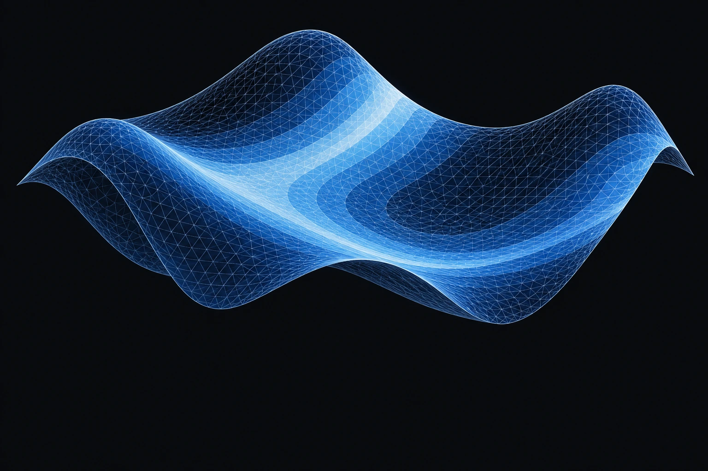
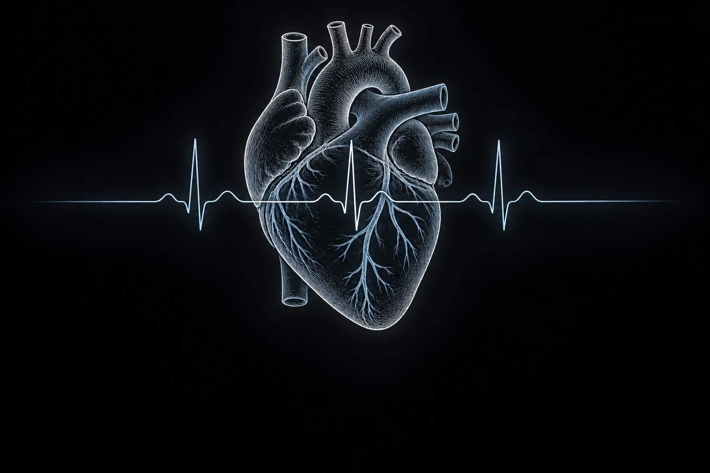

RESEARCH
Models with
a purpose.
Building models, working toward clinical applications, and exploring the dynamics behind complex systems.
01 · RESEARCH
Cardiac Modeling & Digital Twins

Connecting cardiac electrical activity with computational models.
Cardiac digital twins
Developing and evaluating models that connect cardiac activation with ECG signals.
Real-time cardiac simulation
A completed IQP project exploring finite-state machine models of cardiac electrical propagation.
Public overview only. Code and publications will be linked when available for public release.
02 · RESEARCH
Clinical Applications

Turning physiological signals and models into tools for clinically meaningful questions.
ECG-based localization & navigation
Using ECG measurements and anatomy to localize cardiac electrical sources and guide catheter movement.
This ongoing work connects computational modeling with questions about how physiological measurements can inform a next step.
Public overview only. Code and publications will be linked when available for public release.
03 · RESEARCH
Dynamics & Emergence
How do simple interactions give rise to complex behavior?
Nonlinear dynamics & chaos
Independent study of dynamical systems, alongside an interest in collective behavior and phase transitions.
These interests also connect with my notes and experiments in physics and computational neuroscience.
Public overview only. Code and publications will be linked when available for public release.